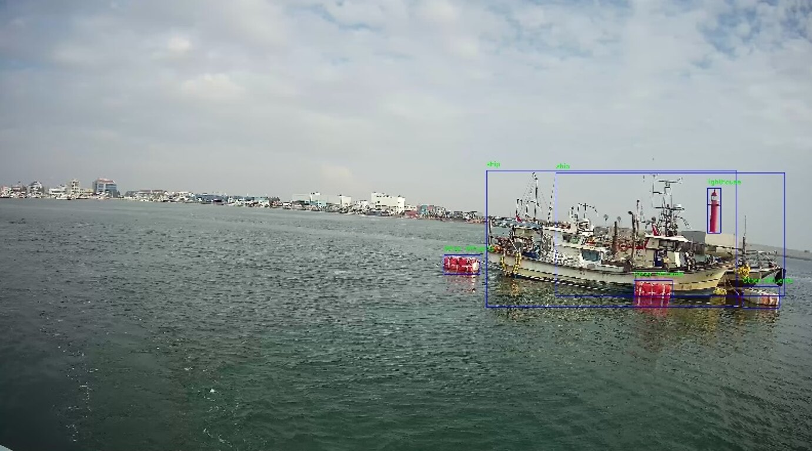
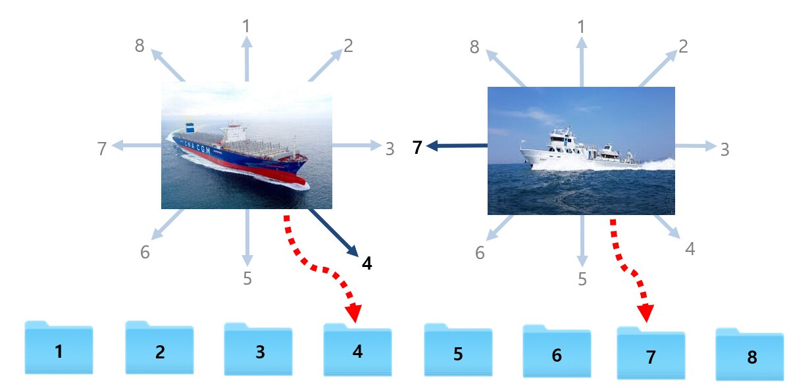
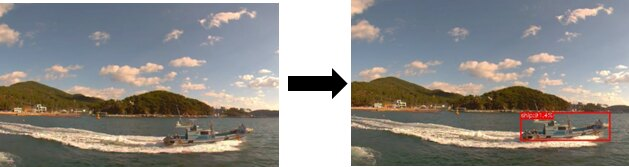
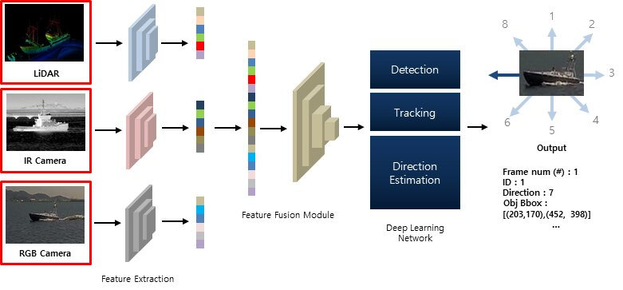
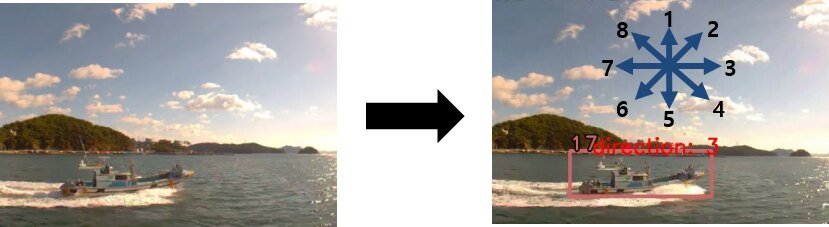

영상 기반 선박 탐지 및 선수 방향 추정 기법 개발
자율협력형 무인선의 상황 인식을 위해 단안 RGB 카메라 영상에서 선박을 실시간으로 탐지·추적하고, 선박의 선수(이동) 방향을 8개 클래스로 추정하는 딥러닝 모델을 개발한 과제.
Overview
본 과업은 자율협력형 무인선의 자율운항을 위해 영상 내에서 움직이는 선박의 진행(선수) 방향을 추정하는 모델 개발을 목표로 한다. 한국해양과학기술원 부설 선박해양플랜트연구소(KRISO)의 무인선 상황 인식 요구에 대응하여, Python 기반의 선박 탐지 및 선수 방향 추정 모델을 개발하였다.
과업의 상세 범위는 (1) 움직이는 선박의 탐지·선수 방향 추정을 위한 데이터 구조 및 라벨링 정의, (2) 선수 방향 학습을 위한 Classification 네트워크 정의(CNN 및 Transformer 기반), (3) 방향 클래스별 확률값 기반의 최종 출력 정의, (4) LiDAR·IR 등 다중 센서를 활용해 단안 RGB 카메라의 한계를 보완하는 멀티모달 기반 선박 인식 알고리즘 설계로 구성된다. 선수 방향은 객체를 중심으로 상단(1)·우상단(2)·우측(3)·우하단(4)·하단(5)·좌하단(6)·좌측(7)·좌상단(8)의 총 8개 방향 클래스로 정의하였다.
Approach
- 데이터 구축 — AI-Hub의 공개 데이터셋 ‘해상객체 이미지’ 중 ‘남해_여수항_2구역’ 데이터(이미지 541,707장, 선박 863,928개)를 사용하고 train:validation을 7:3(379,195 / 162,512장)으로 분할.
- 선수 방향 데이터 가공 — 선박만 Bounding Box로 crop하고, 저해상도·노이즈가 심한 이미지를 제거한 뒤 8개 선수 방향 폴더로 분류하여 학습 데이터 구성.
- 선박 탐지 — 실시간성과 정확도의 Trade-off를 고려해 Anchor-free / Decoupled Head 등 최신 기법이 반영된 YOLOX(YOLOX-X) 모델을 채택. MotionBlur 등 Augmentation으로 해상 흔들림 노이즈에 강인하게 학습.
- 선박 추적 — ByteTrack(SORT 계열) 기반으로 탐지 박스를 추적. Kalman Filter와 Hungarian 알고리즘으로 low-confidence 박스까지 재연관하여 Occlusion 상황의 추적 실패를 보완.
- 선수 방향 추정 — CNN(ResNet, SEResNet, MobileNetV3, EfficientNet)과 Transformer(Swin Transformer)를 비교 실험하여 8방향 분류 모델을 선정.
- 멀티모달 설계 — LiDAR·IR·RGB 다중 센서의 feature를 feature fusion module(Cross / Residual / Transformation Fusion)로 융합하여 단일 센서 기반 탐지의 한계를 보완하는 알고리즘 설계.
Data
학습 데이터는 AI-Hub ‘해상객체 이미지’ 데이터셋을 기반으로 한다. 원본은 1,500시간 분량의 동영상 데이터이며, 이를 Bounding Box·Polygon으로 가공한 540만 장의 이미지(선박 객체 약 100만 개)로 구성된다. 본 과업에서는 그중 ‘남해_여수항_2구역’의 선박 데이터를 선별하여 사용하였다.


Methods & Tech


Results
선박 탐지 — MotionBlur 등 다양한 Augmentation과 Hyper-parameter search를 통한 추가 실험으로 데이터셋 일부를 테스트셋으로 사용하여 최종 mAP 77.35%의 성능을 달성하였다.
선수 방향 추정 — 특정 방향(1번·5번) 이미지의 부족으로 인한 Class imbalance와 중복 이미지로 인한 Unique image 부족(다양성 기준 중복 제거 시 약 93%가 제거됨)으로 정확도가 제한되었다. CNN 기반 모델의 기본 분류 정확도(Accuracy)는 30~35% 수준이었으며, Augmentation·Focal Loss·Label Smoothing 등을 적용하여 약 44%까지 향상시켰다.
